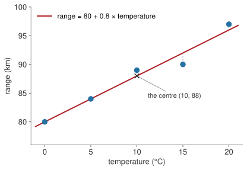
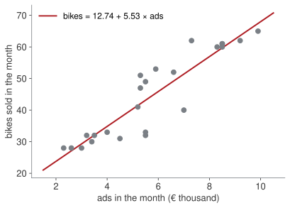
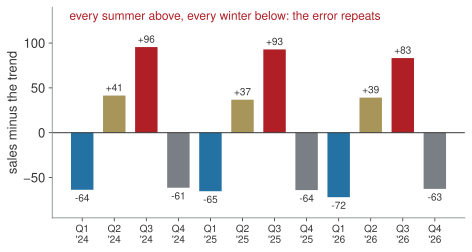
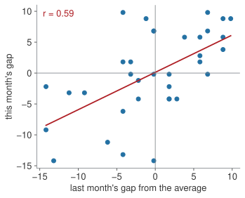
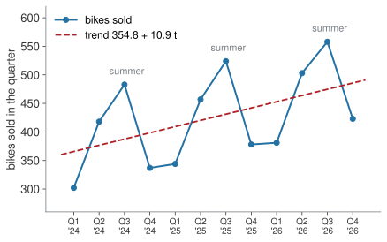

Read the output, then read the calendar
Week 9 · Monday 23 November 2026 · 10:00–13:00 · online
MBA03 Research & Quantitative Business Methods · European School of Economics, Florence
Last Monday, in one minute
Block AA number from data wobblesA big count is a bell; an average wobbles by \sigma/\sqrt{n}, the standard error.
Block BEstimate ± margin\bar{x} \pm z\,\sigma/\sqrt{n}; 1.645 for 90%, 1.96 for 95%.
Block CAssume nothing changedz in standard errors; the p-value is both tails beyond the data. Below .05: reject.
Today we fit a line by hand, then read the slope and its uncertainty in a regression output.
Homework 8 Corrected together, step by step
H1: 400 orders, two couriers
(a) np = 16, n(1-p) = 384: the bell can be used.
\mu = 400 \times .04 = \textbf{16}
\sigma = \sqrt{400 \times .04 \times .96} = \sqrt{15.36} = \textbf{3.919}
(b) “20 or more” starts at 19.5:
z = \frac{19.5 - 16}{3.919} = 0.893 \approx 0.89
P = 1 - .8133 = \textbf{.187}
(c) At 3%: \mu = 12, \sigma = \sqrt{11.64} = 3.412.
z = \frac{19.5 - 12}{3.412} = 2.198 \approx 2.20
P = 1 - .9861 = \textbf{.014}
Board sentence
With today’s courier a penalty month comes about one in five; with the new one, about one in seventy.
Far in the tail the bell is a little optimistic: the exact binomial gives .020. Close enough to decide.
H2: the standard error, and the worst week
(a) SE = 20/\sqrt{16} = \textbf{5} minutes; 20/\sqrt{64} = \textbf{2.5} minutes.
For SE = 1: 20/\sqrt{n} = 1 \Rightarrow \sqrt{n} = 20 \Rightarrow n = \textbf{400} charges.
Four times the charges, half the error: 16 → 64 halves it; 64 → 256 halves it again.
(b) Mean 0, σ = €4,500 a week, the worst tail on the left.
95\%: \; 1.645 \times 4{,}500 = \textbf{€7,402.50}
99\%: \; 2.33 \times 4{,}500 = \textbf{€10,485}
Reading. Nineteen weeks in twenty the fund loses less than about €7,400; ninety-nine weeks in a hundred, less than about €10,500.
The slip: using 1.96 for “95% maximum loss”. Only one tail is bad: 1.645.
H3: an interval, chosen, then sized
(a) SE = 21/\sqrt{49} = 21/7 = \textbf{€3}.
(b) 90%: 126 \pm 1.645 \times 3 = 126 \pm 4.94: €121.07 to €130.94. 95%: 126 \pm 1.96 \times 3 = 126 \pm 5.88: €120.12 to €131.88.
(d) n = (1.96 \times 21 / 2.5)^{2} = 16.46^{2} = 271.1: 272 customers.
(c) The 95% interval is (iii).
- is the 90% interval: z = 1.645.
- uses 1.96 \times 21: one customer’s spread, no \sqrt{n}.
- divides by n = 49 instead of \sqrt{49}.
Same three wrong roads as in class. In the exam they are the three wrong options.
One tail or two: 1.645 or 1.96?
| the question | where the 5% (or 10%) goes | z |
|---|---|---|
| maximum loss at 95%; “the heaviest 5%”; a guarantee | one bad tail: 5% on one side | 1.645 |
| a 95% interval; a two-tailed test at 5% | two tails: 2.5% on each side | 1.96 |
| a 90% interval; a two-tailed test at 10% | two tails: 5% on each side | 1.645 |
| maximum loss at 99% | one tail: 1% | 2.33 |
Ask first: is only one side bad, or both? Then put the area in the tails and read z from the table. 1.645 appears twice — for different reasons.
H4: the same share, two verdicts
H_0: p = .10 · H_1: p \neq .10 · 5%, cut-offs ±1.96.
250 orders, 17 damaged: \hat{p} = .068.
SE = \sqrt{\frac{.10 \times .90}{250}} = .0190
z = \frac{.068 - .10}{.0190} = \textbf{−1.69}
p = 2 \times .0455 = \textbf{.091} > .05: \text{ do not reject}
500 orders, 34 damaged: still 6.8%.
SE = \sqrt{\frac{.10 \times .90}{500}} = .0134
z = \textbf{−2.39}
p = 2 \times .0084 = \textbf{.017} < .05: \text{ reject}
What changed: the standard error shrank by \sqrt{2}, so the same gap is more standard errors away. More data, more certainty — not a different packaging.
The memo: has the new script cut complaints?
To the Board · from Customer Service · the new call script
Before the new script, 12 calls in 100 ended in a complaint. Last month, with the script, 45 of 500 did: 9 in 100.
If the script had changed nothing, we would expect about 60 complaints, give or take 7. We saw 45: a gap that large, in either direction, would happen by luck only about 4 times in 100. The complaint rate fell after the introduction of the script. Other changes that month could also explain the fall.
Recommendation: keep the script, and check again after three months — 4 in 100 is rare, not impossible.
SE = \sqrt{\frac{.12 \times .88}{500}} = .01453
z = \frac{.09 - .12}{.01453} = -2.06
p = 2 \times .0197 = .039
What we look for
- what “nothing changed” predicts, in calls
- the p-value as a sentence, not a number alone
- reject at 5%, and an honest “but”
- one recommendation; no formulas in the text
Four questions for Arno Bikes
| Decision | What we compare |
|---|---|
| What range can we quote for a test ride? | Five rides at different temperatures. Fit a line and move one point. |
| How should we plan sales, test rides and workshop time? | Compare like with like. Name what stays fixed each time you interpret a coefficient. |
| When can we trust the output? | Read the residuals: four assumptions, LINE. |
| How many bikes should we build for winter? | Separate quarterly growth from the usual winter dip, and use last month’s memory. |
Block A · simple linear regression From temperature and range to advertising and sales
Five test days, five temperatures
The same bike on the same loop, on five days:
| temperature x (°C) | range y (km) |
|---|---|
| 0 | 80 |
| 5 | 84 |
| 10 | 89 |
| 15 | 90 |
| 20 | 97 |
Bet before we compute
How many km does one more degree add? Write a number.

The points climb from left to right: a positive relation, close to a straight line. The correlation r measures how close, from −1 to +1.
Correlation: one number for the shape of the cloud

r near +1 or −1: the points sit close to a line. r near 0: no straight-line relation — which is not the same as no relation at all. And a strong r is not a cause: ice cream and sunburn rise together because of the sun.
The line by hand: five rows, two sums
\bar{x} = 50/5 = 10 °C, \quad \bar{y} = 440/5 = 88 km.
| x - \bar{x} | y - \bar{y} | product | (x - \bar{x})^{2} |
|---|---|---|---|
| −10 | −8 | 80 | 100 |
| −5 | −4 | 20 | 25 |
| 0 | 1 | 0 | 0 |
| 5 | 2 | 10 | 25 |
| 10 | 9 | 90 | 100 |
| 200 | 250 |
b = \frac{\sum (x - \bar{x})(y - \bar{y})}{\sum (x - \bar{x})^{2}} = \frac{200}{250} = \textbf{0.8}
a = \bar{y} - b\,\bar{x} = 88 - 0.8 \times 10 = \textbf{80}
\hat{y} = 80 + 0.8\,x
Reading. Each extra degree adds 0.8 km of range. At 0 °C, the line says 80 km.
Least squares, literally
How good is the line? R^{2}
R^{2} = 1 - \frac{SSE}{SST}
- SST = \sum (y - \bar{y})^{2}: the squared misses without the line, predicting \bar{y} = 88 every day: 64 + 16 + 1 + 4 + 81 = \textbf{166}
- SSE = \sum (y - \hat{y})^{2}: the squared misses left by the line: 0 + 0 + 1 + 4 + 1 = \textbf{6}
R^{2} = 1 - \frac{6}{166} = \textbf{.964}
r = +\sqrt{.964} = \textbf{.982}
Reading. Temperature explains 96% of the day-to-day differences in range. The sign of r is the sign of the slope.
Use it inside the data. At 12 °C: 80 + 0.8 \times 12 = \textbf{89.6 km}.
Not outside. At −10 °C the line says 72 km; we never tested below zero, and batteries are not straight lines in the cold.
Board sentence
Range rises by about 0.8 km per degree, and temperature explains almost all the variation in our tests. Print the range for a mild day, and say so on the box.
The model behind the line
Every output we read today rests on one model:
y_i = \beta_0 + \beta_1 x_i + \varepsilon_i
- \beta_0, \beta_1: the true intercept and slope, which we never see
- a, b: our estimates from the data (80 and 0.8)
- \varepsilon_i: the error, everything that moves y and is not x — the wind, the rider, the tyres
We never see \varepsilon. We see the residual, what the line misses:
e_i = y_i - \hat{y}_i
| °C | range | line | residual |
|---|---|---|---|
| 0 | 80 | 80 | 0 |
| 5 | 84 | 84 | 0 |
| 10 | 89 | 88 | +1 |
| 15 | 90 | 92 | −2 |
| 20 | 97 | 96 | +1 |
The residuals add to 0; their squares add to 6, the SSE of R^2.
Four assumptions, one word: LINE
| the assumption | in words | look at | |
|---|---|---|---|
| L | Linearity | the average of y moves along a straight line in x | residuals against x: no curve |
| I | Independence | one error says nothing about the next | residuals in time order: no streaks |
| N | Normality | the errors are bell-shaped around 0 | a histogram of residuals |
| E | Equal spread | the errors have the same σ at every x | residuals against x: no fan |
The slope b only needs L to be right on average. The standard errors, the p-values and the intervals need I and E too — and N when the sample is small.
Try it: drag the points
Drag the 20 °C day down to 85 km: the slope falls, R^2 collapses. One odd point can move the whole line — always look at the picture.
Homework 8, H5: the same table on your data
\bar{x} = 4, \bar{y} = 48.
| x - \bar{x} | y - \bar{y} | product | (x - \bar{x})^{2} |
|---|---|---|---|
| −4 | −8 | 32 | 16 |
| −2 | −5 | 10 | 4 |
| 0 | 1 | 0 | 0 |
| 2 | 2 | 4 | 4 |
| 4 | 10 | 40 | 16 |
| 86 | 40 |
b = \frac{86}{40} = \textbf{2.15}
a = 48 - 2.15 \times 4 = \textbf{39.4}
Each extra point of discount goes with about 2 more bikes a month.
R^{2} = 1 - \frac{SSE}{SST} = 1 - \frac{9.1}{194} = \textbf{.953}
SST: square the y - \bar{y} column, 64 + 25 + 1 + 4 + 100 = 194. SSE = 9.1 was given. r = +\sqrt{.953} = .976.
At 5%: 39.4 + 2.15 \times 5 = \textbf{50.15}, about 50 bikes. At 25%: never tried — and a 25% discount may sell bikes at a loss.
The same line, in every department
| department | the question | y | x | the slope, in words |
|---|---|---|---|---|
| Marketing | Does advertising pay? | sales | ad spend | extra sales per €1,000 of ads |
| Pricing | What happens if we raise the price? | units sold | price | units lost per €1 more on the price |
| Operations | How long will the job take? | hours | units produced, distance | extra hours per unit, per km |
| HR | Is pay in line with experience? | salary | years of experience | extra salary per year, at the same role |
| Finance | How risky is this stock? | stock return | market return | the stock’s move per 1% of the market (its beta) |
| Sales planning | What will next quarter bring? | sales | the quarter number | the growth per quarter (the trend) |
Every row is the same picture: a cloud of points, a line, a slope with units — and a sentence that says what is held fixed.
Finance: the beta of a stock
Sixty months of returns: a stock against the whole market.
\widehat{\text{stock return}} = 0.2\% + 1.3 \times \text{market return}
R^2 = .45 · p-value of the slope < .001
1.3 is the beta. When the market moves by 1%, this stock moves by 1.3% on average, in the same direction: it amplifies the market.
A bad month. The market falls by 4%:
0.2 + 1.3 \times (-4) = -5.0\%
R^2 = .45: 45% of the stock’s ups and downs come with the market; the other 55% are the company’s own news.
A beta above 1 is an aggressive stock, below 1 a defensive one. Fund managers, banks and analysts read this one number every day.
Other sectors, the same reading
| sector | regression | what the coefficient tells the manager |
|---|---|---|
| Real estate | price on square metres, rooms, a dummy for the centre | what one more m² is worth, with the location held fixed |
| Energy | electricity use on temperature and working days | how much demand rises on a cold day — to buy power in advance |
| Retail | store sales on footfall, size and a dummy for a promotion | what a promotion adds, at the same footfall |
| Insurance | claim cost on age of the car, region, past claims | how to price a policy fairly, risk factor by risk factor |
| Healthcare | hospital cost on length of stay and type of treatment | the cost of one more night, at the same treatment |
| Public policy | unemployment change on GDP growth | how many points of growth it takes to cut unemployment |
Same four questions every time: units, sign, what is held fixed, could it be zero? And the same warning: associated, not caused.
24 shop-months: ads against bikes sold

Two shops, twelve months each: what each spent on ads (€ thousand) and how many bikes it sold.
Bet before we compute
How many extra bikes does €1,000 of ads buy? Write a number.
The points climb: more ads, more bikes. The computer fits the line using the same two sums we used for the five test rides.
The output, line by line
| coefficient | std. error | t | p-value | 95% interval | |
|---|---|---|---|---|---|
| intercept | 12.74 | 3.29 | 3.87 | .001 | 5.92 to 19.55 |
| ads (€ thousand) | 5.53 | 0.53 | 10.38 | < .001 | 4.42 to 6.63 |
n = 24 shop-months · R^2 = .830
The equation. \widehat{\text{bikes}} = 12.74 + 5.53 \times \text{ads}
The slope. Each extra €1,000 of ads goes with about 5.5 more bikes a month.
R^2. Ads explain 83% of the differences in sales between shop-months.
Std. error. The slope is a number from data: it wobbles. Give or take 0.53 bikes.
t and p-value. Last week’s test, on H_0: the slope is zero, there is no linear association. t = 5.53 / 0.53 = 10.4 standard errors from zero: p < .001, reject.
Interval. About two standard errors each side: 4.4 to 6.6 bikes per €1,000.
Four numbers, four sentences
| in the output | the question it answers | the sentence |
|---|---|---|
| coefficient | how much y moves when x moves by one | “€1,000 more ads, about 5.5 more bikes” |
| p-value | could the true slope be zero? | “the data give strong evidence of a linear association (p < .001)” |
| 95% interval | how precisely do we know it? | “somewhere between 4.4 and 6.6 bikes” |
| R^2 | how much of y does the line explain? | “83% of the month-to-month differences” |
Bet, again
When the shops spend more on ads, they also tend to offer more hours of test rides. Which activity is the slope of 5.53 picking up?
Block B · multiple regression What changes when we hold test-ride hours fixed?
One outcome, two budget decisions
We add the number of staffed test-ride hours to the same 24 shop-months.
| Predictor | Ads only | Ads and test-ride hours | Standard error in the second model |
|---|---|---|---|
| Intercept | 12.74 | 13.95 | 0.99 |
| Ad spend (€1,000s) | 5.53 | 2.94 | 0.24 |
| Test-ride hours | 1.16 | 0.08 | |
| R^2 | .830 | .985 |
At fixed test-ride hours, an extra €1,000 in advertising is associated with 2.94 more bikes. At fixed spending, one more staffed hour is associated with 1.16 more bikes.
Which comparison isolates the ad coefficient?
\widehat{\text{bikes}}=13.95+2.94\,\text{ads}+1.16\,\text{hours}
| Monthly plan | Ads | Staffed hours | Predicted bikes |
|---|---|---|---|
| A | €5,000 | 10 | 40.25 |
| B | €6,000 | 10 | 43.19 |
| C | €6,000 | 15 | 48.99 |
B versus A: €1,000 more in ads at the same hours gives 2.94 more predicted sales. C versus B: five additional hours at the same spend give 5\times1.16=5.80 more. Predictions use the rounded coefficients shown above.
Which estimate belongs in the budget meeting?
The founder proposes increasing the ad budget by €1,000 while keeping the test-ride rota unchanged. Would you use 5.53 or 2.94 to forecast the difference?
Use 2.94. The first model compares months that can differ in both spending and test-ride hours. The second holds hours fixed. Managers may also raise spending when they expect demand to grow, so the predicted difference alone cannot establish a return on advertising.
Try it: held fixed, live
Move the hours: the red line, slope 2.94, moves up and down but keeps its slope. The grey line, 5.53, lets hours rise with ads.
Test rides with a passenger
For a new set of loaded rides, engineering gives you this model. Temperature is in °C and extra load is in kg.
\widehat{\text{range (km)}}=82+0.7\,\text{temperature}-0.4\,\text{load}
Before calculating: one ride is 10 °C warmer but carries 20 kg more. Which bike goes farther?
| Ride | Temperature | Extra load | Predicted range |
|---|---|---|---|
| A | 10 °C | 5 kg | 87 km |
| B | 20 °C | 25 kg | 86 km |
At fixed load, 10 °C adds 7 km to predicted range. At fixed temperature, 20 extra kg costs 8 km. Together the changes give 1 km less.
Would a deeper discount sell more bikes?
36 shop-months, with prices discounted by 2 to 10 percentage points. Read the ad and discount slopes with the other predictor fixed.
| Predictor | Coefficient | Standard error | p-value |
|---|---|---|---|
| Intercept | 22.1 | 3.0 | < .001 |
| Ads (€1,000s) | 2.8 | 0.6 | < .001 |
| Discount (percentage points) | 1.1 | 0.9 | .23 |
Try D2. At €4,000 of ads, compare discounts of 5% and 7%. How confident would you be about the direction of the change?
Predicted sales rise from 38.8 to 41.0. The estimated difference is 2.2 bikes. The approximate 95% interval for the slope is 1.1\pm2(0.9), or −0.7 to 2.9 bikes per point, so even the direction is uncertain. The p-value says the same: .23 > .05, so the discount is not shown to matter once ads are held fixed — which is not proof that it does nothing.
Block C · the assumptions When the assumptions break
What breaks, what it costs, what we do
| the residuals show | what is broken | what it costs | what we do |
|---|---|---|---|
| a curve | L | the slope is wrong at the ends | add x^2, or take a log |
| a fan, wider to the right | E | standard errors and p-values are off | log of y, or robust standard errors |
| one point far away | (an outlier) | one row moves the whole line | check that row; report with and without |
| streaks over time | I | standard errors too small, p-values too optimistic | model the time: trend, season, last month |
The last row is the opening of block D: sales over time break the I.
Try it: which assumption breaks?
Block D · time: a trend, a season, memory What will we sell next quarter?
A straight trend is not enough

Fit only a straight line through the twelve quarters, \text{sales} = a + b\,t, and look at what it misses.
Every summer the residual is about +90, every winter about −65. Knowing this quarter’s error tells you next year’s: the errors are not independent. The I of LINE is broken.
The trend’s standard error and p-value would be too optimistic, and every winter forecast would be about 65 bikes too high.
Errors that remember last month

Web orders, 36 months. Plot each month’s gap from the average against the gap of the month before.
A good month is followed by a good month: r = .59. The error of one month carries into the next — again, not independent.
Neither a trend nor a season explains this. It is memory.
Try it: errors linked in time
Move φ from 0 to 0.9: the residuals start to run in streaks. Then tick “add last month as a predictor” and watch the streaks disappear.
The fix: put in the model what the errors remember
Fix 1 — the calendar. If the error repeats every year, add the season:
\text{sales} = a + b\,t + \text{the quarter's gap}
The four gaps (−67, +39, +90, −63) take the summer and the winter out of the error.
Fix 2 — memory. If the error carries from one month to the next, add last month:
y_t = c + \phi\,y_{t-1} + \varepsilon_t
This is the autoregressive model, AR(1). With last month in the model, the residuals of the web orders lose their link: r = .59 becomes r = -.04.
A pattern in the residuals is information the model has not used yet. Put it in, and the errors become independent again.
Quarterly sales: a trend and a season

Three years of quarters. Two patterns at once: the sales climb year after year, and every year has the same shape — a quiet winter, a busy summer.
Compare Q1 with Q1 in another year to spot growth. Compare winter with summer within each year to spot the seasonal pattern.
Which of the two patterns matters when planning production for next winter?
Trend + season + noise
Next year’s first quarter, by substitution
The trend, least squares on the quarter number t = 1, \dots, 12:
\text{trend} = 354.8 + 10.9\,t
About 11 more bikes every quarter.
The season, the average gap from the trend for each quarter:
| Q1 | Q2 | Q3 | Q4 |
|---|---|---|---|
| −67.0 | +39.1 | +90.5 | −62.7 |
Forecast = trend + season. Next year’s Q1 is t = 13:
354.8 + 10.9 \times 13 - 67.0
= 354.8 + 141.7 - 67.0 = \textbf{429.5}
Round to 430 bikes for the production plan.
Board sentence
At quarter 13 the trend points to about 497 bikes. Winter typically runs 67 bikes below trend, giving a first-quarter plan of about 430.
Fix 2 in practice: next month’s web orders
Regress each month on the month before:
| coefficient | std. error | p-value | |
|---|---|---|---|
| intercept c | 39.8 | 14.6 | .010 |
| last month, \phi | 0.60 | 0.15 | < .001 |
\phi = 0.60: this month keeps 60% of last month’s gap from the average; p < .001, the memory is real.
Last month: 110 orders. Forecast one month at a time:
y_{+1} = 39.8 + 0.6 \times 110 = \textbf{105.8}
y_{+2} = 39.8 + 0.6 \times 105.8 = 103.3
Where it settles: \mu = \dfrac{c}{1 - \phi} = \dfrac{39.8}{0.4} = \textbf{99.5}
Board sentence
Last month’s 110 was partly luck: plan about 106 web orders next month and 103 the month after, drifting back to 100.
Today remembers yesterday
Formulas and outputs, on one page
| question | how to read or compute it | this morning |
|---|---|---|
| a slope from an output | coefficient: change in y for one more x; p-value: test of slope = 0; interval ≈ coefficient ± 2 SE | 5.53, p < .001, 4.4 to 6.6 |
| additive model | compare observations with the other predictors held fixed | 2.94 per €1,000 at fixed test-ride hours |
| fit | R^2 = 1 - SSE/SST: the share of the squared misses the line removes; adjusted R^2 fines extra variables | 1 - 6/166 = .964; .830 → .985 (adj. .984) |
| when to trust it | LINE: linearity, independence, normality, equal spread; read the residuals | temperature residuals 0, 0, +1, −2, +1 |
| trend and season | forecast = a + b\,t + the quarter’s gap | 354.8 + 10.9 \times 13 - 67.0 = 429.5 |
| memory | \hat{y}_{t+1} = c + \phi\,y_t, settles at c/(1-\phi) | 105.8, then 103.3; 99.5 |
For each slope, name the outcome, the unit of change and what stays fixed.
Homework 9
Four exercises on paper, plus a memo to the Board. homework.md on the course site.
- H1 one output, four sentences, and the slope’s test
- H2 kilometres and delivery stops: what each coefficient means, two predictions
- H3 trend and seasonal gaps for accessory sales
- H4 can we trust it? the assumptions, and a forecast from last month
Due Sunday 29 November, 23:59 on Moodle. Corrected together at the start of next Monday.
The memo. 150–250 words to the production manager: how many bikes to plan for next quarter, and how sure you are.
Next Monday: the last session, a review of the second half on paper. Bring a calculator and the normal table.
← Course site · Research & Quantitative Business Methods · ESE Florence